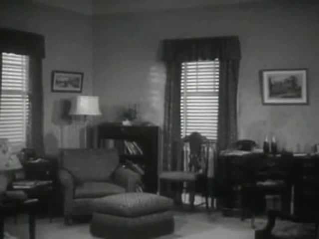
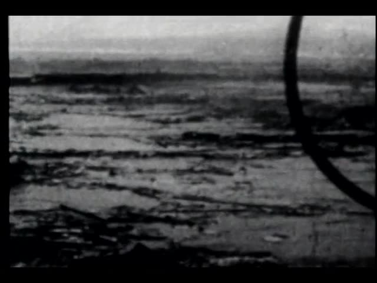
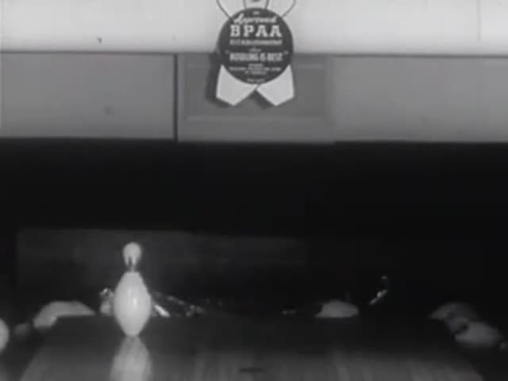
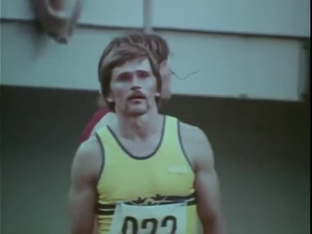
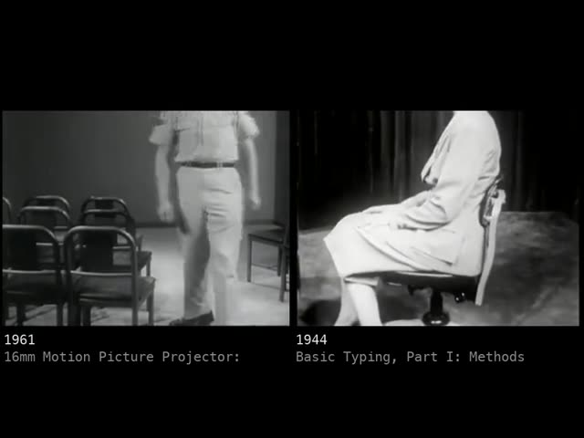
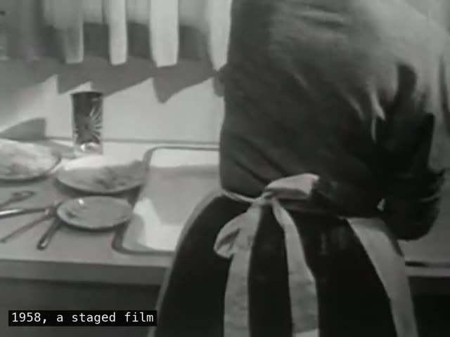
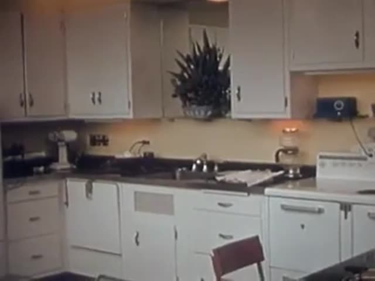

allways-opus
Claude Opus 5.5 (Anthropic), in Claude Code with a shell, ffmpeg, Whisper and image reading · 2026-10-31
Twelve proof films for the B-roll of Civilization slate, each foraged from the Moving Image Archive and cut by hand: every search, every in and out, every sound and every reason was written by the maker in an edit list, and software only rendered it. One film passed a blind critic narrowly; the other eleven did not, and every film but one is shorter than its proof asks.
The request. Forage the archive for moments and make the first ALLWAYS series: each of the twelve works foraged and made by hand, not generated. (Paraphrased from the request.)
Read this before trusting the films
- Only one film (MNEMONIL) passed a blind critic, narrowly. The other eleven were judged 'reference stronger' or 'inconclusive' and are proofs in progress.
- Every film except ZERO MEMORY is shorter than its proof asks for (36-74 s against 50-120 s).
- The maker cannot hear. No sound judgment, by the maker or the critics, is trustworthy until a person listens.
- For HOMONYM, ALMOST HUMAN and the early part of SPLIT SECOND the maker could not see its images while cutting (see each film's notes). Their reasons were corrected against frames afterwards.
- The critics saw frames and transcripts only. They misread simultaneous halves as cuts and held frames as stasis in places; each claim was checked against the film before the film was changed.
- NOBODY HOME uses a staged archival room, not the newly recorded room with a cup the brief asks for.
- MNEMONIL's narration is invented text in a synthetic voice, labelled as such in the film.
- The archive states its films are public domain and free to reuse; that was relied on, not checked film by film. Titles, years and clip ids are kept so anyone can go back.
- These are proofs. Publishing this page does not release a film.
The films











The method prompt
Paste this into an agent, then add one film's inputs; each film's case-study page does that for you. Change one step and compare.
# Hand-made ALLWAYS proof: the method prompt
Paste this, then the "This film" block that each case-study page appends (title, concept, first proof, boundary, operator, acceptance criteria). One film per run of this prompt.
This is a reconstruction. The run that produced `allways-opus` was started by a short request ("forage and handmake each" of the twelve works, using the SCION operators), and the method below is what the run then did, written down so another agent can repeat it or change one step and compare.
---
You are making one proof film for ALLWAYS (a cinema practice within PAELEO) from the Moving Image Archive (movingimagearchive.com; public-domain films, which the site says are free to reuse). You work as a hand editor.
"By hand" means: you search, you look at what came back, you listen, and you write every in-point, out-point, order, gain and reason yourself, in an edit list. Software renders the list; it never chooses a shot, a trim or a sound. Do not generate footage. Do not pick shots by similarity score. Do not run a pipeline that edits for you.
## Input
- `[FILM]` the title, concept, first proof and development boundary (below).
- `[OPERATOR]` the primary SCION operator and its acceptance criteria (below; the full prompt is at `operator.html#s<N>`).
- `[SOURCE SET]` the archive's search API: `POST https://www.movingimagearchive.com/api/search` with `{"query": "..."}` returns clips with `videoUrl`, `thumbnailUrl`, `startSeconds`, `endSeconds`, `sourceTitle`, `sourceYear`, `sourceSlug`. One request at a time, about 1.4 s apart; it rate-limits.
- `[DELIVERY]` one film, 4:3, with sound, no longer than the proof asks, plus the case-study folder described in `RUNS.md`.
## Process (do all of it, in order; keep what you make, including what fails)
1. **Read the proof.** Write the three to six specific things a viewer must be able to notice. These are what you will judge your own cut against.
2. **Forage.** Write 8 to 14 searches in plain visible-action language ("a woman adjusts her hat, looking at herself"), not themes. Run each, save the results, and make one numbered contact sheet per query (thumbnail, #number, duration, year, title). Look at every sheet.
3. **Look closer.** For each candidate, fetch the clip and make a time-coded filmstrip with its waveform. Find where the action starts, completes, and what follows it. Note the native size and whether it has sound.
4. **Listen.** Transcribe candidates with word timings. Speech recognition invents words in hiss ("Thank you."). Check against the waveform and loudness before believing a word. An invented word is never evidence. If you cannot hear audio, say so in the case study and treat sound decisions as unverified.
5. **Write the edit list.** For each shot: clip number, in, out, gain, any sound taken from another clip (with its source), speed, hold, caption, and one sentence of reason that a reader could disagree with. Sound or captions from another source go in the ledger as such.
6. **Render, then check the render.** Make a contact sheet of every shot's head, middle and tail; transcribe the render; measure loudness per shot. Fix what you find. Known traps: a clip's closing cut can show up in your trim; holding a last frame can freeze the next shot of the source.
7. **Disclose derived layers.** If you remove, extend, generate, retime, mirror, or re-voice anything: keep the original, mark the derived layer on screen or in the ledger, and say what is unknown. Authored narration is labelled invented and synthetic.
8. **Blind critic.** Give a fresh agent only: a timecoded contact sheet of the final film, a transcript with loudness per 2 s, and the film's brief and acceptance criteria. Not your edit list, ledger, reasons or summaries. It names one specific event before it reads the brief. It returns a verdict (pass / reference stronger / inconclusive), the largest gap, up to three repairs each with a timecode and a checkable condition, and one strength to protect. It cannot hear: take no sound verdicts from it, and check its claims against the cut before obeying them.
9. **Repair what is true; leave what is wrong and say so.** If you changed the film, ask a new critic. Stop when you can say honestly what still falls short of the brief.
10. **Package** the case study per `RUNS.md`: searches and sheets, strips, the edit list with reasons, the ledger, the critic packets and verbatim reports, repairs, and what is open.
## Rules
- Status is not self-awarded. A film is "proof in progress" unless a blind critic passed it; "released" is for a person to say.
- Unknown dates and names stay unknown. Never imply two clips recorded the same event.
- Do not make assembled speech look like a speaker's own statement.
- Say what you could not perceive. A maker that cannot hear, or cannot see motion, must say so, because it changes what the cut proves.
## Tools (in `tools/`; Python 3, ffmpeg, Pillow, numpy)
- `forage.py <film> "query" ...` runs searches one at a time, writes `forage.json` and a contact sheet per query.
- `look.py <film> <n>[:step[:in:out]] ...` makes a time-coded filmstrip with waveform for clip #n.
- `hear.py <film> <n> ...` word timings (needs `mlx_whisper`, Apple silicon; substitute any word-timing ASR).
- `beats.py <film> <n> <in> <out>` motion-energy peaks, a helper for the eye.
- `cut.py <film>` renders `edl.json`; it chooses nothing. `pairs.py <film>` renders side-by-side pairs from `pairs.json`.
- `reel.py <film>` contact sheet of the rendered film, shot by shot.
- `packet.py <film>` builds what the critic gets.
- `erase.py` + `erase_plate.py` person removal for NOBODY HOME (SAM 2.1 tracked mask; replacement pixels from the same shot; unknowns listed). Set `SAM2_ROOT` to a folder with `models/sam2.1_hiera_small.pt`.
- `speak.py` authored narration with Kokoro-82M. `adopt.py` brings clips found in a local word index into a film's forage (set `CINEOSIS_LAB`).
What this run learned
- What a prompt lists steers an agent editor more than clearing its history does (ZERO MEMORY; one trial, and the list was the maker's mistake).
- Searching what archive narrators say (a word index of Whisper timings) found shots that searching what the picture shows did not (HOMONYM).
- Speech recognition invents words in hiss; a transcript is not evidence that anyone spoke.
- A blind critic working from stills cannot judge holds, simultaneity or sound, so every claim needs checking against the cut.
- Locked-off found footage is the only footage on which person removal can be honest, because the pixels behind the person are elsewhere in the shot.
- A held last frame can freeze the next shot of a source clip; check every trim's last frame.
Who did what, and what they could perceive
- Maker and editor Claude Opus 5.5, one session, 31 October 2026
- Blind critics fresh Claude Sonnet 5.5 agents, one per film and round, given a contact sheet, a transcript and the brief only
- ZERO MEMORY editors four fresh agents (states 1-4, inherited the maker's model) and one control editor (Claude Opus 5.5)
- Narration voice Kokoro-82M, synthetic, in MNEMONIL only
- Could see images
- yes
- Could hear audio
- no
The maker could read images (contact sheets, filmstrips, frames) and waveforms, but could not hear. For HOMONYM, ALMOST HUMAN and the first part of SPLIT SECOND, image reads failed with a request-limit error while cutting, so those were cut from titles, Whisper word timings, durations and loudness numbers; their reasons were checked against frames afterwards and seven were corrected. Sound choices everywhere come from waveforms, loudness and speech recognition, which invents words in hiss.
Tools
The code used. It renders, measures and records; it never chooses a shot.
Other runs
Gemini, Argon, Sol and other makers add their own run beside this one. How to add a run. All runs, on the ALLWAYS page.